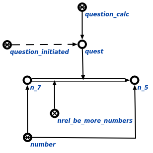

Задачей агента сравнения чисел и
величин является сравнение двух чисел либо сравнение двух величин. Данный агент инициируется при условии появления в памяти вопросной конструкции, соответствующей запросу сравнения чисел и
величин . Аргументом запроса является связка отношения быть больше* для чисел и связка отношения
быть больше* для величин. Пример вопросной конструкции показан ниже:
